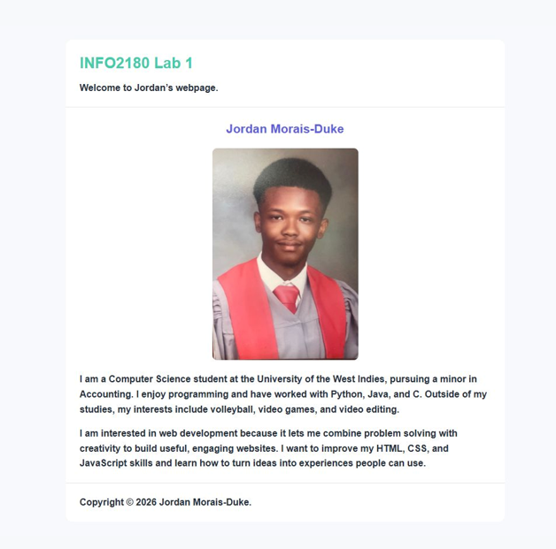
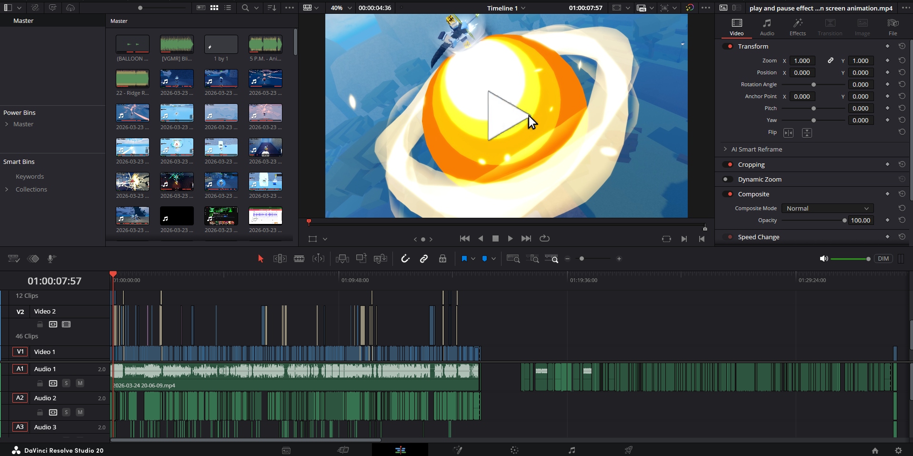

Learning to Build for the Web
October 5, 2026 • Jordan Morais-Duke

As a Computer Science student at UWI, I spend a lot of time learning how programs work. Web development has been interesting because I can see a result in the browser as soon as I make a change. HTML gives the page its structure, while CSS lets me decide how the different parts fit together.
Building this blog has given me a chance to practise both. I had to think about how the posts, images, and sidebar would look on a wide screen and on a phone. Working through the layout has reminded me that small details matter: a clear heading, readable spacing, and an image in the right place can make the whole page easier to use.
Why I Enjoy Video Editing
September 28, 2026 • Jordan Morais-Duke

Video editing is one of my favourite ways to be creative. I like how a few choices about timing, music, and transitions can change the feeling of a clip. It is satisfying to take several small pieces of footage and turn them into something that tells a story.
My other interests give me plenty of ideas. A volleyball highlight needs a different pace from a video game clip, and each one gives me a chance to try a new approach. Editing also teaches patience. I often have to watch a moment more than once before I find the cut that feels right, but that attention to detail is part of what makes the finished video worth sharing.